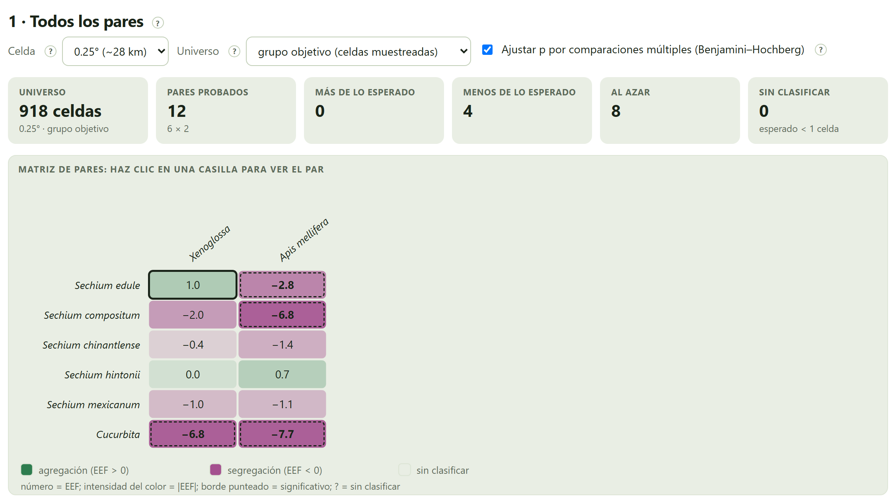
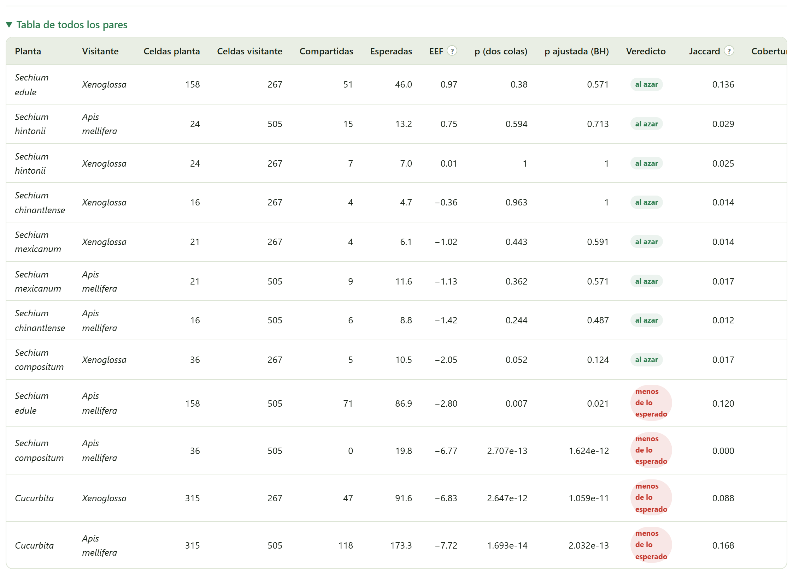
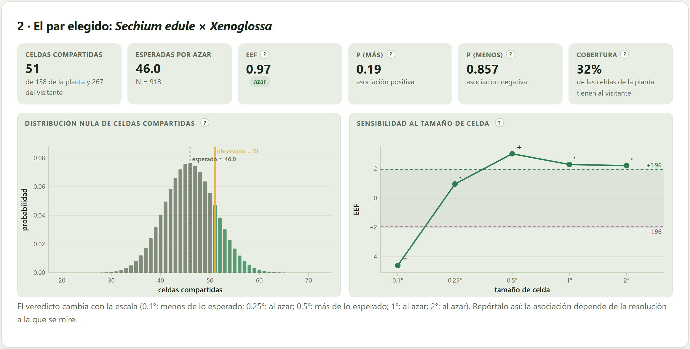
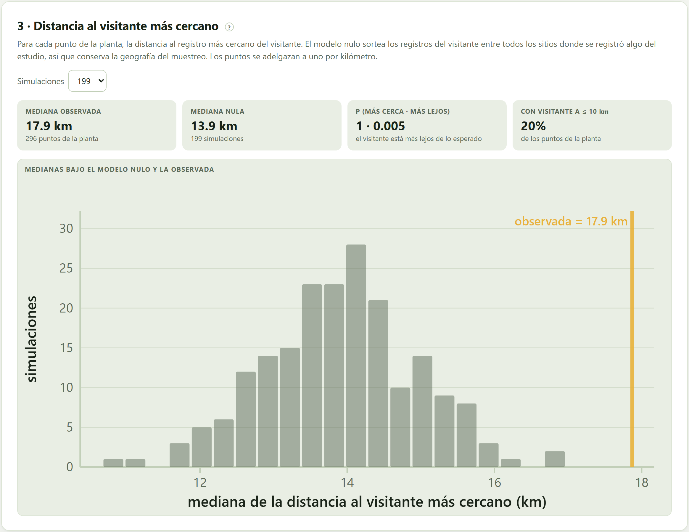
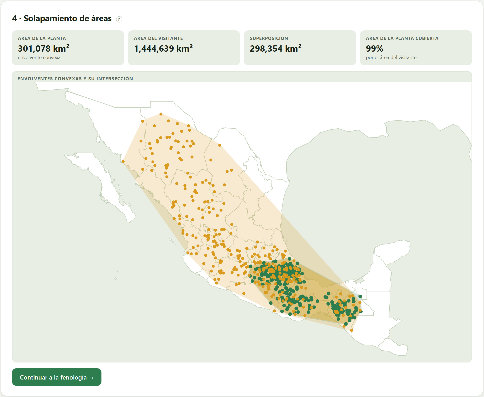

¿Coinciden la planta y el visitante en el territorio más de lo que el azar predice, una vez descontado dónde se muestreó? Tres lecturas independientes: las celdas que comparten, con la prueba exacta de Veech y su sensibilidad a la escala; la distancia de cada planta al visitante más cercano, contra un modelo nulo que conserva la geografía del muestreo; y el solapamiento de sus áreas.
Que la planta y el visitante tengan registros en los mismos lugares no dice nada si no se sabe cuántas coincidencias se esperarían por azar. La prueba de este bloque compara lo observado con lo esperado, y la respuesta depende de dos decisiones: entre qué sitios se reparte el azar (el universo) y a qué escala se mira (el tamaño de la celda).
El territorio se corta en celdas. Si el universo tiene N celdas, la planta ocupa N₁ y el visitante N₂, y se colocaran al azar una respecto de la otra, el número de celdas compartidas j seguiría la distribución hipergeométrica. La app calcula la probabilidad de observar tantas o más (asociación positiva) y tantas o menos (asociación negativa), sin simulaciones ni supuestos de normalidad (Veech 2013). El tamaño estandarizado del efecto (EEF) dice a cuántas desviaciones estándar está lo observado de lo esperado; |EEF| > 1.96 corresponde más o menos a p < 0.05 (Gotelli 2000).
El universo por omisión es el grupo objetivo: las celdas donde se registró cualquier unidad del estudio, que son las que de verdad se muestrearon (Phillips et al. 2009). La alternativa, toda la tierra de la extensión, reparte el azar también entre celdas que nadie visitó; el laboratorio del Bloque 1 (sección 1.3) muestra el error que eso produce.
La primera tarjeta prueba cada planta contra cada visitante con tres controles: el tamaño de la celda (0.1°, 0.25°, 0.5°, 1° o 2°, es decir, unos 11, 28, 55, 110 o 220 km), el universo y el ajuste por comparaciones múltiples de Benjamini–Hochberg.

| Recuadro | Qué dice |
|---|---|
| Universo | Cuántas celdas entran en el azar, con el tamaño y el tipo de universo. |
| Pares probados | Plantas × visitantes. |
| Más de lo esperado · Menos · Al azar | Los veredictos, con p ajustada si el ajuste está activo. |
| Sin clasificar | Los pares en los que el azar nunca podría rechazarse: los que esperan menos de una celda compartida o en los que ni el resultado más extremo alcanzaría α = 0.05. Con tan pocos datos, ninguna conclusión es posible y la app no la finge. |
Al hacer clic en una casilla de la matriz se elige ese par para las tarjetas siguientes. El desplegable Tabla de todos los pares los ordena por EEF, de la agregación a la segregación:

Además de la prueba, cada par lleva dos índices descriptivos: el de Jaccard (celdas compartidas entre celdas de cualquiera de los dos) y la cobertura (qué fracción de las celdas de la planta tiene al visitante). ⤓ Pares (.csv) descarga la tabla completa, con los índices de Sørensen y de Simpson y las dos colas de p.
Con 6 plantas y 2 visitantes se prueban 12 pares; con 30 pares, a α = 0.05, se esperaría uno o dos «significativos» aunque no hubiera ninguna asociación. El ajuste de Benjamini y Hochberg (1995) controla la proporción esperada de falsos positivos entre los pares que se declaran asociados. Usa la p ajustada para decidir y reporta las dos; si solo te interesa un par elegido de antemano por la hipótesis, su p sin ajustar es la que corresponde.

| Recuadro | Qué dice | Chayote × Xenoglossa |
|---|---|---|
| Celdas compartidas | Las observadas, de las de la planta y las del visitante. | 51 de 158 y 267 |
| Esperadas por azar | N₁·N₂/N, con el tamaño del universo. | 46.0 · N = 918 |
| EEF | El tamaño estandarizado del efecto, con su etiqueta de escala. | 0.97 · azar |
| p (más) · p (menos) | La probabilidad de tantas o más celdas compartidas (prueba de asociación positiva) y de tantas o menos (negativa). | 0.19 · 0.857 |
| Cobertura | Qué fracción de las celdas de la planta tiene al visitante. | 32 % |
La figura de sensibilidad repite la prueba con los cinco tamaños de celda. En el estudio de práctica, el veredicto cambia: menos de lo esperado a 0.1°, al azar a 0.25°, más de lo esperado a 0.5°, al azar a 1° y 2°. La app lo escribe debajo y aconseja: «Repórtalo así: la asociación depende de la resolución a la que se mire.» Cuando los cinco coinciden, dice que el resultado es robusto a la escala.
| Si la pregunta es si el visitante puede llegar a la flor | entonces usa celdas pequeñas (0.1–0.25°): una abeja solitaria forrajea a cientos de metros o pocos kilómetros de su nido; un abejorro, a varios kilómetros. |
| Si la pregunta es si comparten región (biogeografía, historia) | entonces celdas de 0.5–1°. |
| Si el veredicto cambia con la celda | entonces no elijas la que te conviene: reporta la figura de sensibilidad y di a qué escala hay asociación y a cuál no. |
Con celdas muy finas y pocos registros casi nada coincide y los pares quedan sin clasificar; con celdas enormes casi todo coincide. Ninguno de los extremos informa.
La tercera tarjeta no usa rejilla. Para cada punto de la planta mide la distancia al registro más cercano del visitante y toma la mediana. El modelo nulo reemplaza los registros del visitante por otros tantos sitios sorteados sin reemplazo entre todos los registros del estudio —el grupo objetivo—, lo que conserva la geografía del muestreo y rompe solo el vínculo entre los dos taxones; se repite 99 a 999 veces (Davison y Hinkley 1997). Antes, los puntos se adelgazan a uno por kilómetro para que un sitio muy registrado no pese por cien.

| Recuadro | Qué dice |
|---|---|
| Mediana observada | La distancia típica de un punto de la planta al visitante más cercano, con cuántos puntos de la planta entran. |
| Mediana nula | La mediana de las medianas simuladas. |
| p (más cerca · más lejos) | La fracción de simulaciones con una mediana igual o menor (el visitante está más cerca de lo esperado) y igual o mayor (más lejos). Con 199 simulaciones, la p más pequeña posible es 0.005. |
| Con visitante a ≤ 10 km | Qué fracción de los puntos de la planta tiene un registro del visitante a 10 km o menos: una cifra fácil de comunicar. |
A 0.25°, la prueba de celdas dice «al azar» para el chayote y Xenoglossa; la de distancias dice «más lejos de lo esperado». Miden cosas distintas: la primera cuenta si comparten celdas de 28 km; la segunda, qué tan cerca está cada chayote del visitante más próximo. En los datos de práctica, Xenoglossa se extiende por el centro y el norte, donde hay muchos registros de otras unidades, y el chayote se concentra en el centro y el sureste: dentro de las celdas que comparten, los puntos no están particularmente juntos. Reporta las dos y di qué mide cada una.
La cuarta tarjeta dibuja la envolvente convexa de cada unidad —el polígono más pequeño sin entrantes que encierra todos sus puntos (Andrew 1979)— y calcula su área sobre la esfera (Chamberlain y Duquette 2007), la de su intersección (Sutherland y Hodgman 1974) y qué fracción del área de la planta cubre la del visitante.

Es la lectura más gruesa de las tres: una envolvente convexa incluye todo lo que queda entre los puntos extremos —en la Figura 5.5, buena parte del Golfo de México—, así que exagera el área de las especies con registros dispersos. Sirve para decir si el visitante cubre, al menos en extensión, el área de la planta; no para decir si coinciden dentro de ella.
| Prueba | Pregunta | En la práctica (chayote × Xenoglossa) |
|---|---|---|
| Celdas (Veech) | ¿Comparten más celdas que al azar? | Al azar a 0.25°; depende de la escala. |
| Vecino más cercano | ¿Está el visitante más cerca de la planta que al azar? | Más lejos de lo esperado. |
| Envolventes | ¿Cubre el visitante el área de la planta? | Sí, el 99 %. |
«Xenoglossa ocupa prácticamente toda el área del chayote (99 % de su envolvente convexa), pero sus registros no coinciden con los de la planta más de lo esperado por azar dentro de las celdas muestreadas (0.25°: 51 celdas compartidas frente a 46.0 esperadas, EEF = 0.97), y el resultado depende de la escala. La distancia de cada registro de la planta al del visitante más cercano fue mayor que bajo un modelo nulo del grupo objetivo (mediana 17.9 frente a 13.9 km; p = 0.005). Xenoglossa es, por lo tanto, un polinizador potencial cuya coincidencia espacial con el chayote debe confirmarse con observaciones de visitas.»
Recuerda que estos números son de los datos de práctica: sirven para aprender la redacción, no para concluir nada del chayote.
Aun con las tres pruebas a favor, lo que el bloque demuestra es oportunidad de interacción. La frase que un revisor tachará es «X es polinizador de Y porque sus distribuciones se solapan»; la correcta, «X y Y se solapan en el espacio, lo que hace de X un polinizador potencial a confirmar con observaciones de visitas y de carga de polen» (Blanchet et al. 2020; Dormann et al. 2018).
| Mensaje | Qué significa y qué hacer |
|---|---|
| Hacen falta plantas y visitantes | La lista necesita al menos una planta y un visitante con registros depurados. |
| La rejilla es demasiado fina para el universo de «toda la tierra» en esta extensión | Con celdas de 0.1° sobre un área grande, el universo de toda la tierra tiene demasiadas celdas. Usa celdas más grandes o el grupo objetivo. |
| El veredicto cambia con la escala… | No es un error: es un resultado. Repórtalo con la figura de sensibilidad. |
| Muchos pares «sin clasificar» | Hay pocos registros para la celda elegida. Usa celdas más grandes o reúne especies en su género (Bloque 3). |